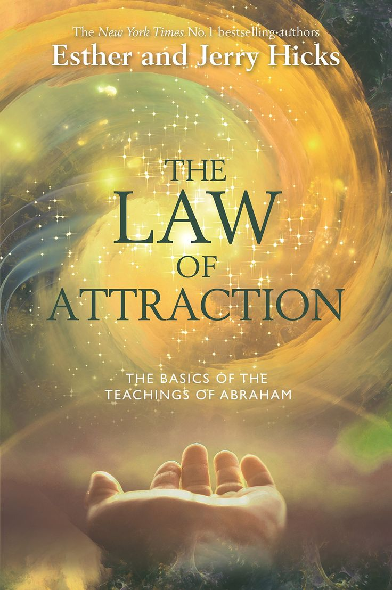
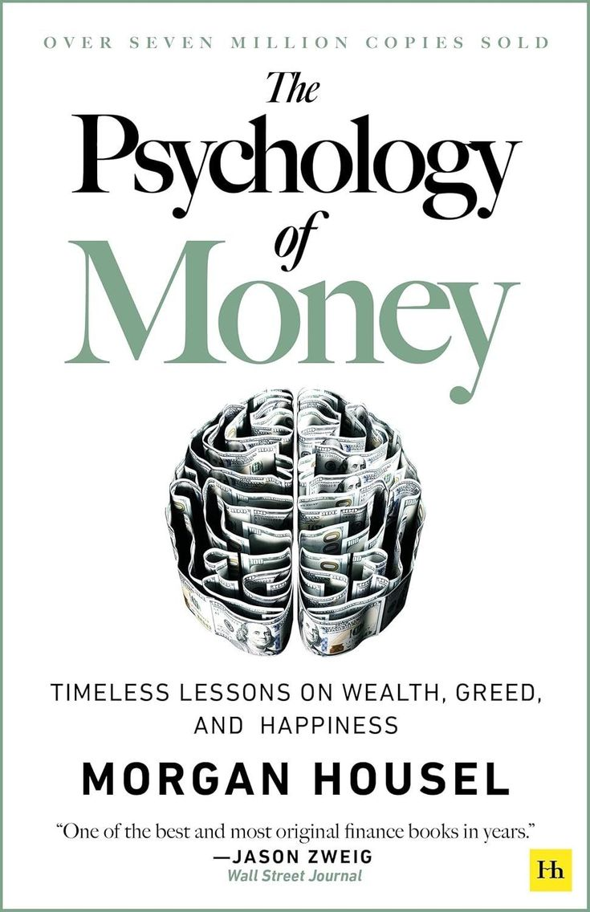
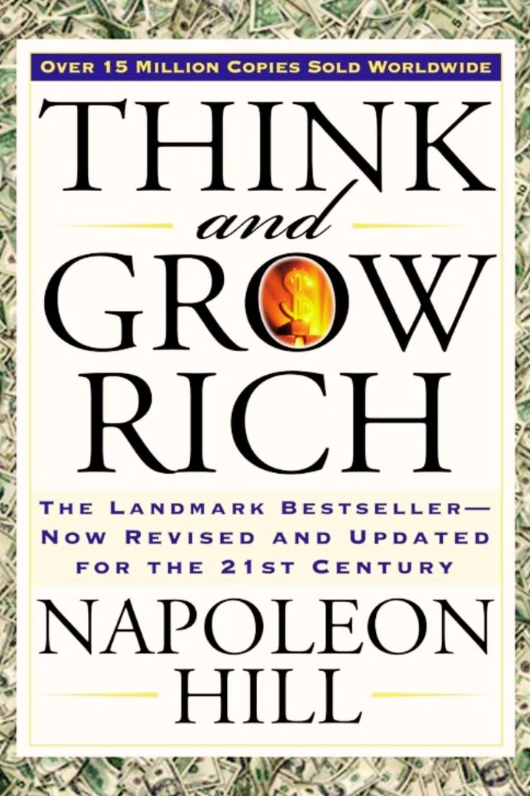
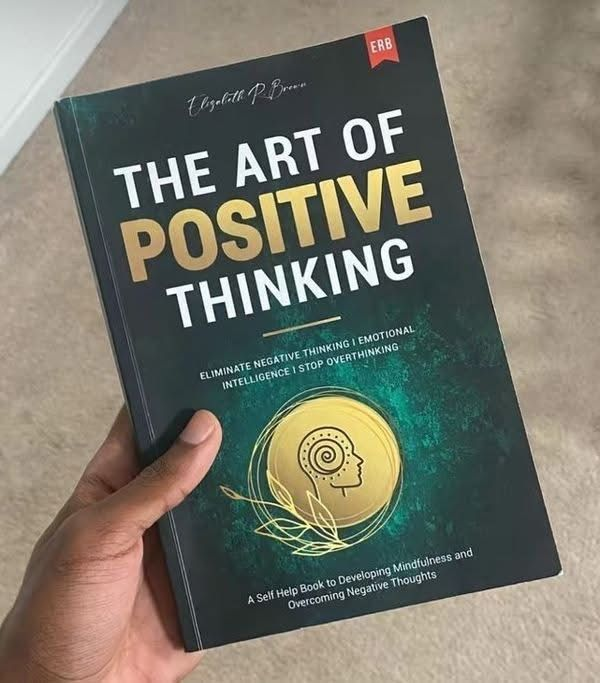
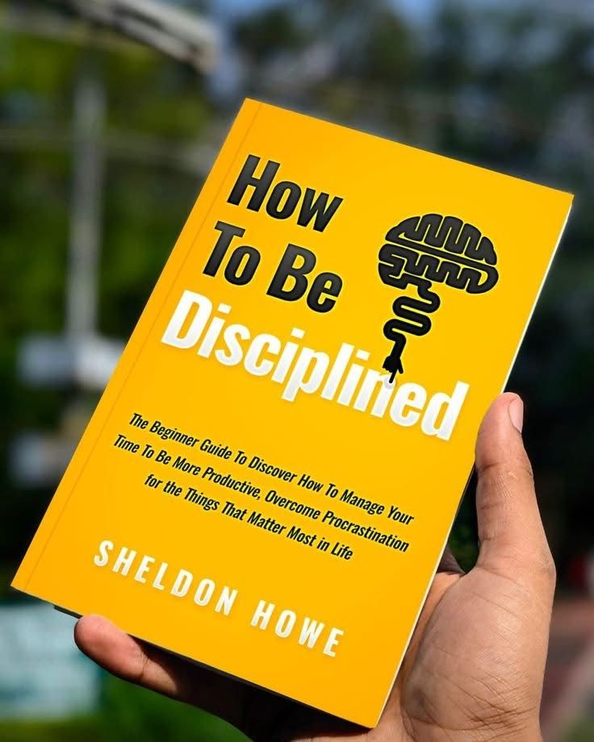
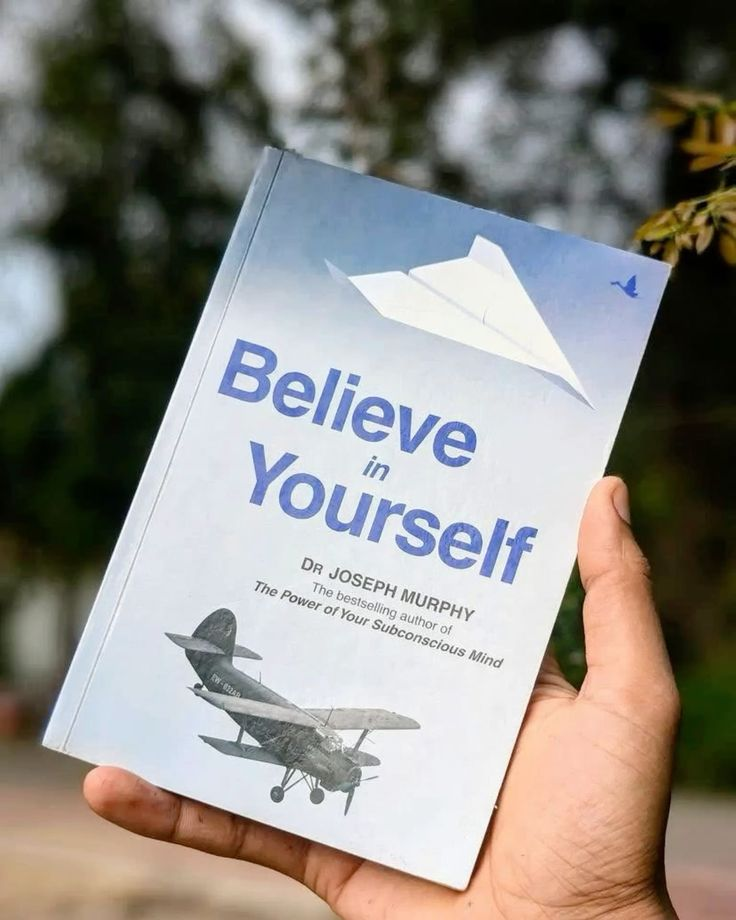
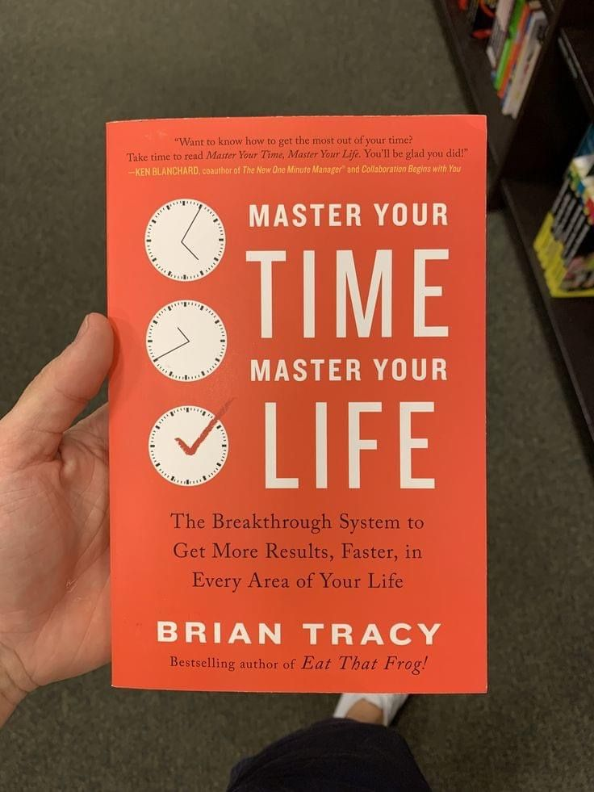
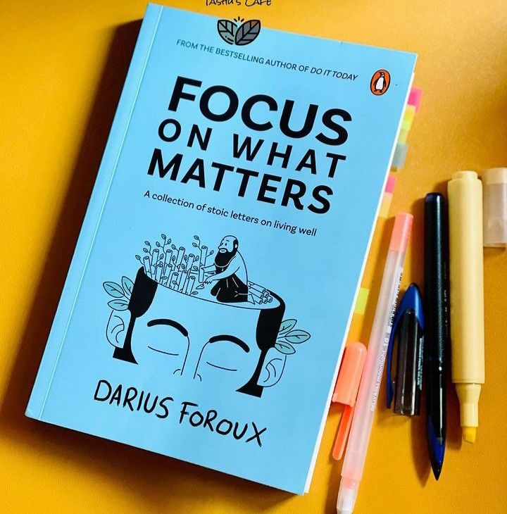

The Law of Attraction
The Law of Attraction is the power key to unlock your destiny, to consciously attract more of what you want and less of what you don’t want. This book teaches you how to use the hidden energy within you to alter your life circumstances to create abundance of happiness and success.

Rich dad poor dad
This audiobook is your clear, engaging guide to Robert Kiyosaki’s Rich Dad Poor Dad, one of the most influential personal finance books of all time. In this detailed summary, you’ll learn why the rich don’t just work for money — they make money work for them.

The psychology of money
The Psychology of Money by Morgan Housel is a thrilling exploration of how human behavior, emotions, and mindsets impact financial decisions. Instead of focusing on complex investment strategies, Housel emphasizes that financial success is more about how you think and act than about what you know.

Think and grow rich
Think and Grow Rich is the best motivational literature that I’ve come across. I was involved in a certain marketing stint during my engineering, and this book was suggested to me by a friend, who is today one of the finest motivational speakers.

The Art of positive thinking
Positive thinking is far more than wishful optimism; it is a mental attitude that influences our emotions, decisions, behaviors, and relationships. It is the conscious practice of focusing on opportunities, solutions, and personal growth rather than dwelling on obstacles and limitations.

How to be disciplined
In How to Be Disciplined, author Sheldon Howe teaches you how to overcome common obstacles like procrastination and break bad habits, replacing them with positive routines and goal-setting strategies to create lasting discipline in your life.

Believe in your self
He connects modern self-help techniques with universal values like faith, discipline, and inner peace, which are familiar pillars of Indian culture. The book reminds us that belief is not just about wishful thinking; it’s about developing a mental attitude that is in harmony with our goals.

Master Your Time Master Your Life
In this transformative guide, Tracy introduces ten essential strategies designed to help you seize control of your time, enabling you to achieve your goals with greater efficiency and ease.

Focus On What Matters
Inspired by Seneca’s Letters from a Stoic, Foroux brings 2,000-year-old philosophical insights into the 21st century, offering practical advice on inner peace, happiness, clarity, and resilience. It’s a philosophical yet approachable guide for filtering out noise and living a more intentional life.

Atomic habits
Atomic Habits by James Clear is a comprehensive, practical guide on how to change your habits and get 1% better every day. Using a framework called the Four Laws of Behavior Change, Atomic Habits teaches readers a simple set of rules for creating good habits and breaking bad ones.